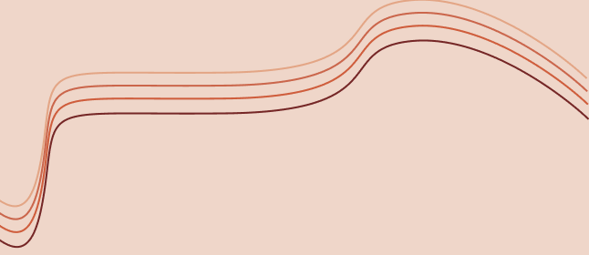
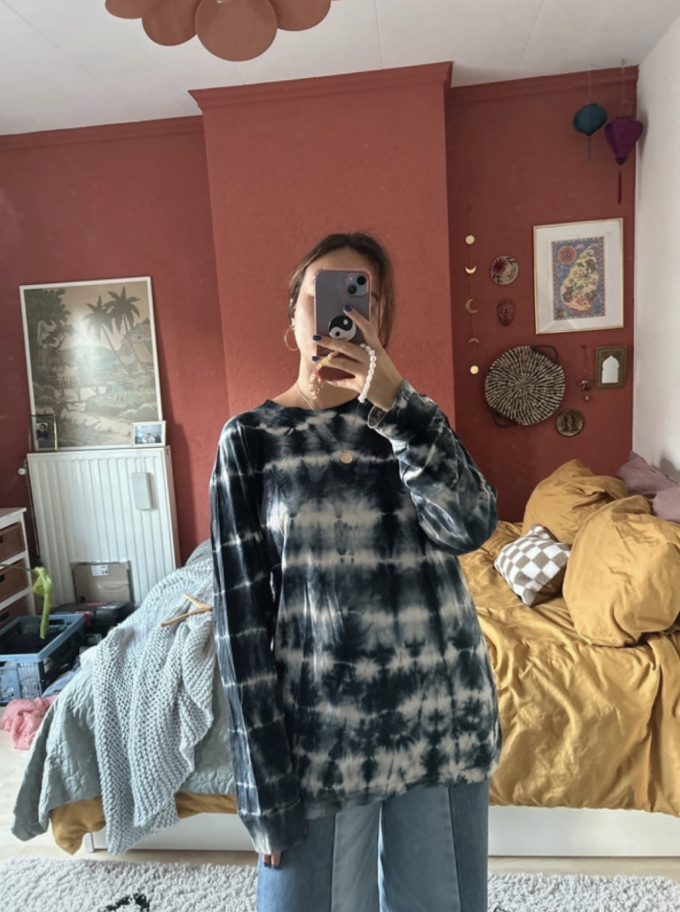
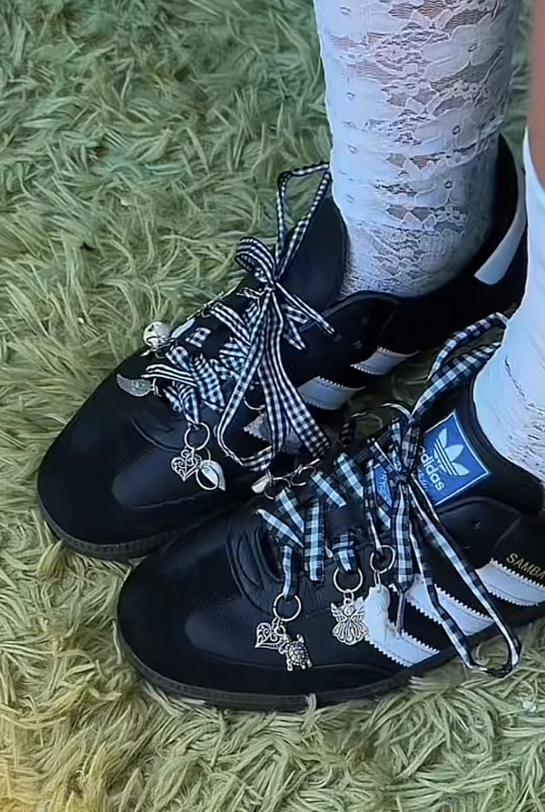
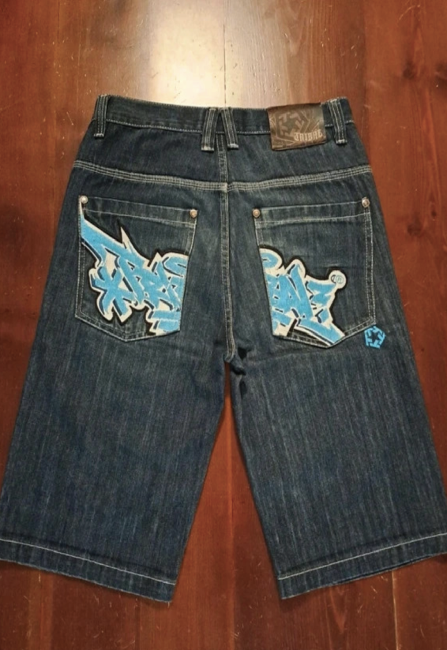

Waarom is tweedehands duurzaam?
Tweedehands kleding draagt bij aan duurzaamheid door de vraag naar nieuwe kleding te verminderen. Dit vermindert de CO2-uitstoot en het energieverbruik dat gepaard gaat met de productie van nieuwe kleding. Het hergebruiken van kleding voorkomt dat het in de afvalstroom terechtkomt en vermindert textielafval op stortplaatsen. Het kopen van tweedehands kleding draagt bij aan een meer circulaire economie waarin materialen efficiënter worden gebruikt. Upcycling van oude kleding geeft deze een nieuw leven en helpt mensen te leren over reparatie en hergebruik van kleding. Tweedehands kledingwinkels bieden vaak werkgelegenheid aan mensen met een afstand tot de arbeidsmarkt. Het kopen van tweedehands kleding ondersteunt deze sociale initiatieven. Kortom, tweedehands kleding is duurzaam omdat het de milieu-impact van de mode-industrie vermindert, de circulaire economie bevordert en sociale en economische kansen biedt.
Upcycle
Het upcyclen van kleding draagt bij aan het verminderen van afval. Door oude kledingstukken om te vormen tot iets nieuws, voorkom je dat ze op de vuilnisbelt belanden en draag je bij aan een circulaire economie. Upcycling van kleding stimuleert ook bewust consumeren. Het moedigt mensen aan om hun kledingkast op een creatieve en duurzame manier te benaderen, in plaats van steeds nieuwe kleding te kopen.
Tie-Dye
Om een tie dye look aan je kleding te geven, heb je een wit kledingstuk, elastieken, textielverf en een paar uur geduld nodig. Bind het kledingstuk op verschillende plekken met elastieken.
Breng daarna de textielverf aan volgens je gewenste patroon en laat het een paar uur rusten. Spoel vervolgens het overtollige verf uit en laat het kledingstuk drogen. Dit zorgt voor een unieke, kleurrijke en artistieke uitstraling aan je kleding, waarmee je een vrolijke en opvallende look kunt creëren die je persoonlijke stijl weerspiegelt.
Schoenen Personaliseren
Personaliseer je schoenen op unieke wijze door lint als veters te gebruiken en hangertjes in het rijgsysteem te bevestigen. Knip het lint op de gewenste lengte, rijg het door de schoenen en bevestig hangertjes voor een en persoonlijk tintje.
Met deze eenvoudige DIY-techniek creëer je schoenen die echt opvallen en je eigen unieke stijl weerspiegelen.
Kleding Verven
Met textielverf heb je de mogelijkheid om een uniek design te verven op je kleding. Je kunt je creativiteit de vrije loop laten en je eigen patroon of ontwerp creëren. Het geeft je de vrijheid om je kleding een persoonlijk tintje te geven.
Textielverf hecht goed op stoffen en zorgt voor duurzame resultaten. Het is een leuke en eenvoudige manier om je kledingkast een nieuwe en opvallende look te geven.